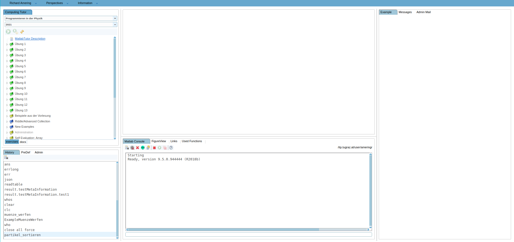
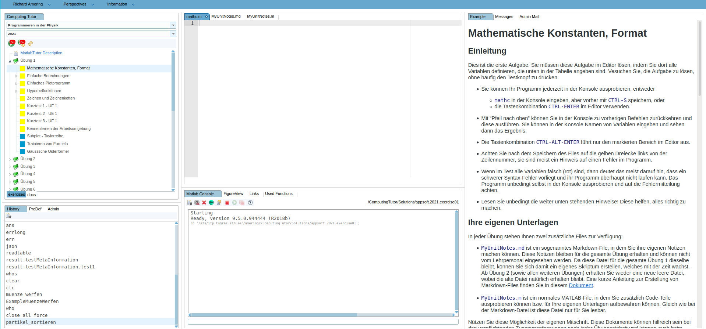

Overview of the MatlabTutor¶
Perspective: Computing Tutor¶

When you are loging in into the MatlabTutor, you will be faced by a Page similar to the one above. There are a lot of interesting places that we should be familiar with, so we will give a short overview within this section. It is planned to give a more detailed guide to all the functionalities in the future, but for now, we will only cover the Example implementation in greater depth.
Whenever you work within the MatlabTutor, it is important to know in what “Perspective” you currently are. You can check the active Perpective by the “Perspectives” tab in the top. The default one is called “Computing Tutor”, and is available for every user logged in to the Tutor. On the left side (below the tab with “Computing Tutor”) a dropdown menu provides access to your available courses, and below that you can select the year, if you have been signed in to the course for more than one year. In the above screenshot, the selected course is “Programmieren in der Physik”, and the year is 2021.
Further still, all the available Excercises within the selected course are visible, where each Excercise can consist of one or more individual Examples. This is the most important place if you are a student of the course, since you are going to solve the Examples here.
Below the listed Excercises, two tabs, called “exercises” and “docs” allow to switch between Examples, and additional documents, if provided by the course-tutors.
Expand one of the Exercises and select one of its Examples, and the Example page will be opened. It will look like the following:

You will find the problem-decription on the right side, and a text editor in the middle. The text editor is the place where you will write most of your code (besides the Console) and where you can create your own documentation of everything important to you. At the top of the Editor-section, you will find all your available files, organized in tabs. In general, you will see at least three files: one Matlab file belonging to the Example, and two files called “MyUnitNotes”. Note that the UnitNote Files are a matlab- and a markdown file. These two files will serve as your documentation file, with executable code in one, and markdown-formatted text in the other. These two files consist within each Excercise, meaning that you have access to them across all Examples in one Exercise.
Perspective: Workbench¶
Another perspective, of particular interest when implementing new Examples, is the “Workbench”.
Access the Workbench Perspective from the tab “Perspectives” in the top most section of the page. The new perspective will load. You will now find two additional tabs on the top left, namely “Resources” and “Examples”. Select Examples, and you will be faced by a page with very close resemblance to the earlier page, from the “Computing Tutor” perspective.
This page gives us access to the Excercises and Examples in a similar fashion, but focuses on editing and implementing new Examples for students of a selected course. This view is not accessible to every user, but only to assigned Tutors of the individual courses. It is also, along with the “Administration” Perspective, the most important place for Lecturers of the course, since Examples, allong with all their tests and problem description are going to be defined in here.
We cover the Implementation of such Examples from the ground up in a lot of detail, since it is the main focus of this documentation. If you are ready, select the appropriate chapter on the left of the book, or follow the “next” buttons down below.